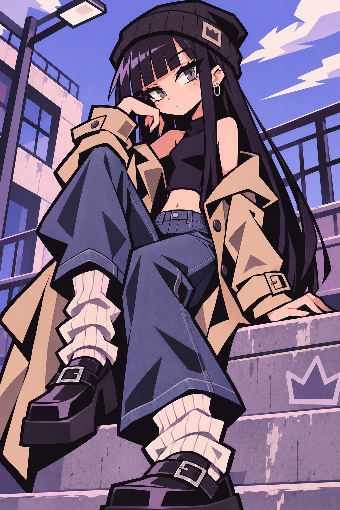
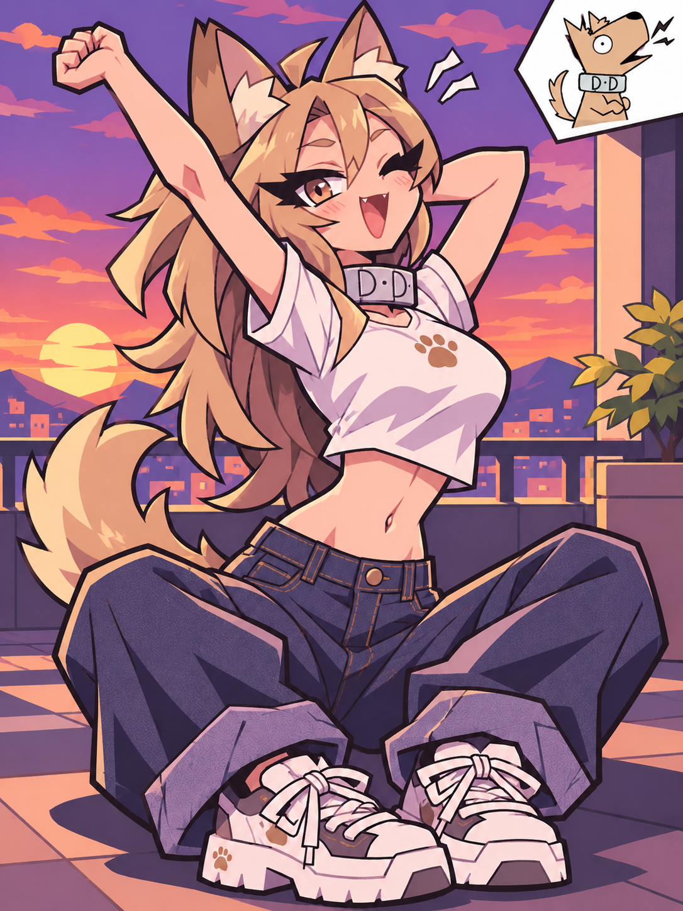

뿌아앙 ㅋㅋ
이건 퍼온거

지피티이미지 2.6 업뎃된기념으로 이것저것 생성해봄
주요 지표
이미지 검열이 엄청나게 완화됨.
11개 연속으로 생성하면서 단 한번도 검열로 막힌 적이 없음.
대놓고 쇡스 그림 그려줘 춘화 그려줘는 당연 막히는데 단순 관능미를 표현한 그림 정도는 그냥 시워언하게 생성됨.
이미지 생성속도가 엄청나게 빨라짐. 기존 1분 30초~3분정도 걸리던게 이제 30~45초면 됨.
신체 조형에 대한 자연스러운 이해가 올라옴.
컨토션이나 요가자세 같은 걸 부탁할 때 본인이 안되겠다 싶은 건 자연스레 포즈를 수정해서 최대한의 자연스런 결과를 반영하려고 함.
기존 이미지에서 재생성을 하면 무조건 자글거리는 노이즈가 올라왔는데, 그런 노이즈가 많이 완화됨. 없어진 건 아닌데, 거슬리지 않을 수준으로 올라옴.
멀티모달 기능을 강화했는지, 프롬프트 작성해서 하네스(조건문)를 사용하는것보다 그냥 원하는 이미지를 넣어서 이 그림의 화풍을 참조해서 그려달라고 하는 게 훨씬 더 그림이 잘 그려짐. => 여기서 많이 허우적댐....
옛 Sora 느낌으로 gif 이미지 생성이 가능해짐. 완전 좋은 느낌까진 아니고 그냥 이런 게 있다 정도.

추억의 DD
승희는 개드립콘업뎃하라,,,@@!!!!
프롬프트를 공개하라